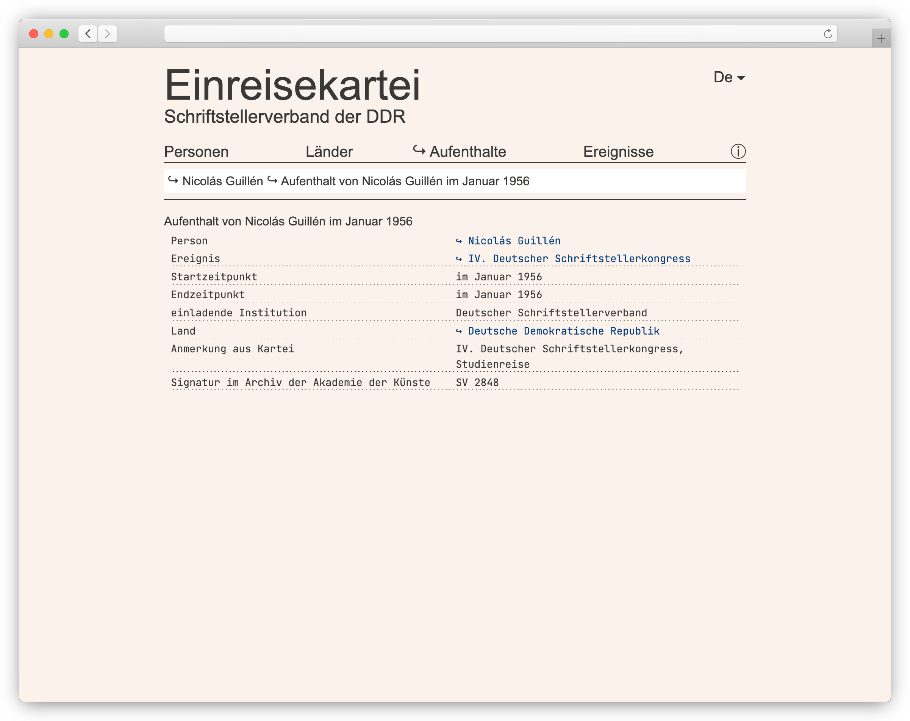
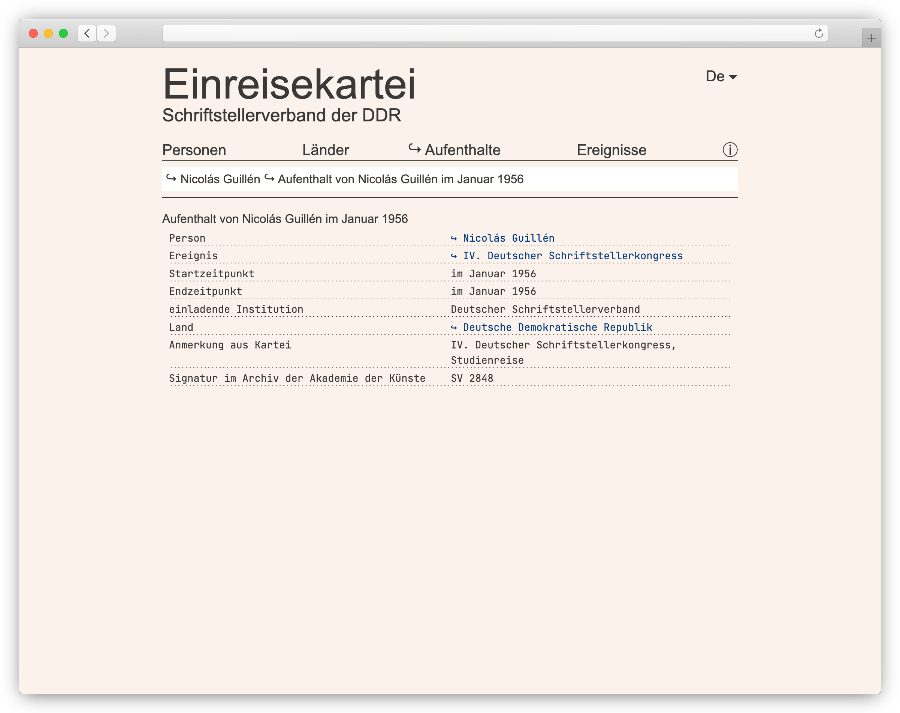

Web-App

 

Frameworks
- SvelteKit mit TypeScript
- Web-Framework
- nutzt Svelte als clientseitiges Komponenten-Framework
- Svelte-Pendant zu Reacts Next.js
- Tailwind CSS als CSS-Framework
Externe Daten
- Verknüpfung mit Wikidata-ID
-
Abrufen externer Daten mit
wikibase-sdk - mit TypeScript-Types seit Februar 2023
DSV-Daten
{
id: '9da20d80-2cbc-41d0-80cc-aba0a18150c3',
name: 'Nicolás Guillén',
countryOfOrigin: { id: '6b6ba4e7-1738-4b6a-ba61-a4111929c8dd', }
identifiers: {
viaf: '29534974',
gnd: '118543504',
worldcatIdentities: 'lccn-n50018817',
wikidata: 'Q334118'
},
}
Wikidata
{
id: "Q334118",
type: "item",
labels: {
en: "Nicolás Guillén",
de: "Nicolás Guillén",
},
descriptions: {
de: "kubanischer Dichter und Schriftsteller",
en: "Cuban poet, journalist, political activist, and writer",
},
claims: {
P27: ["wikidata:Q241"],
P1412: ["wikidata:Q1321"],
P569: ["1902-07-10"],
P19: ["wikidata:Q115329"],
P570: ["1989-07-16"],
P20: ["wikidata:Q1563"],
P18: ["NicolásGuillén-1942.jpg"],
P21: ["wikidata:Q6581097"],
// ...
},
}
Vereinfachte Daten aus
wikibase-sdk
{
id: 'wikidata:Q334118',
labels: { en: 'Nicolás Guillén', de: 'Nicolás Guillén' },
descriptions: {
de: 'kubanischer Dichter und Schriftsteller',
en: 'Cuban poet, journalist, political activist, and writer'
},
countryOfOrigin: [{ id: '6b6ba4e7-1738-4b6a-ba61-a4111929c8dd', }],
languagesSpoken: [{ id: 'wikidata:Q1321', }],
birthDate: [ '1902-07-10' ],
placeOfBirth: [{ id: 'wikidata:Q115329', }],
deathDate: [ '1989-07-16' ],
placeOfDeath: [{ id: 'wikidata:Q1563', }],
image: [ 'NicolásGuillén-1942.jpg' ],
gender: [{ id: 'wikidata:Q6581097', }]
}
Angleichung an unser Schema
Datumsangaben
- Angaben unvollständig
- Ungewissheit nicht als geordnete Präzision ausdrückbar
- Extended Date/Time Format (EDTF)
-
Erweiterung zu bewährtem ISO-8601-Format (z. B.
2023-03-15) - unspecified Digits
| EDTF | Darstellung |
|---|---|
1979-12-19 |
19. Dezember 1979 |
1972-01-XX |
im Januar 1972 |
XXXX-09-24 |
24. September, Jahr unbekannt |
XXXX-07-XX |
im Juli, Jahr unbekannt |
XXXX-XX-XX |
unbekannt |
EDTF: Anmerkungen
- wenige Implementierungen
- menschenlesbare Ausgabe eigens implementiert
- Spezifikation sehr umfangreich